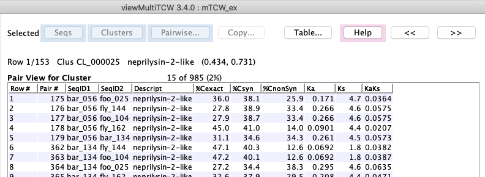

Select a row followed by:
Sequences : the table of sequences for the cluster will be shown (see lower left image).
Pairs : the table of pairs for the cluster will be shown (see lower right image).

| Table | Filters | Columns |
|
The table on the right was created with the filter to show the clusters of method 'CL-Closure' with at least one
sequence for each dataset.
Select a row followed by:
|
|
Sequences in selected cluster

|
Pairs in selected cluster
 |


| Go to top |